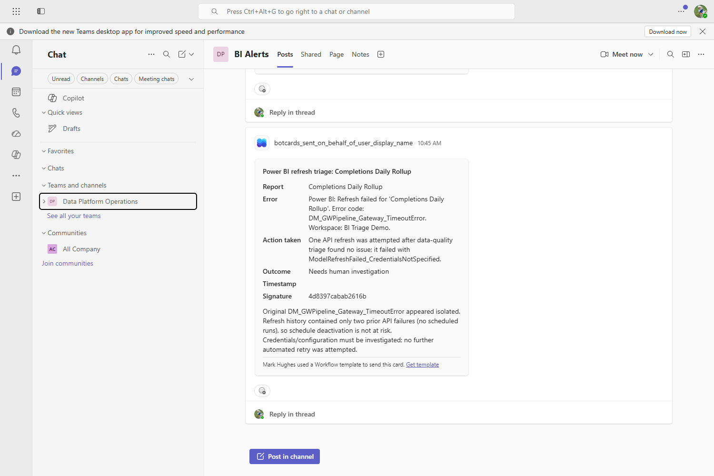

Persona scenario:
Power BI refresh failure
The same runs as the technical walkthrough, described from the user's side. All screenshots are from live runs.
A People
| Who | Cares about | Current experience |
|---|---|---|
| Priya Finance analyst |
The report showing today's data. | A report that looks normal but is a day stale. Nothing indicates a problem. |
| Sam BI platform engineer, on call |
Being paged only for failures that need him. | An alert mailbox nobody reads. Reconstructs the failure from logs, hours later. |
| The agent bi-triage-controller |
Operating within its policy limits. | Reads the alert, the refresh history, the data, and the incident store. |
Priya and Sam are roles used for this document. The runs, Power BI calls, incident records and identities are real. Only the two names are placeholders, so the document can be reused without naming a customer's staff.
B Timeline
| Time | Event | Who |
|---|---|---|
06:02 | Scheduled refresh fails with a gateway timeout. | — |
06:03 | Power BI emails the alerts mailbox. | — |
06:05 | The agent is invoked and reads the mailbox. | agent |
06:05 | Checks for an existing incident, reads refresh history, asks the data quality agent whether the data is sound. | agent |
06:06 | Retries once and verifies, or escalates with the evidence. | agent |
08:30 | Opens the report. Data is current. | Priya |
08:30 | Reads one notification: what failed, what was done, why. Or a request to approve an action the agent may not take alone. | Sam |
Measured: ~47 seconds from the agent starting a sweep to a recorded outcome, first response at ~11 seconds. Add the interval of whatever triggers it.
1 Resolved automatically
A transient gateway timeout. The failure is isolated and the data is sound, so one retry is correct.

- 1 Checks for an existing incident first. If this failure is already open, a second alert must not trigger a second fix.
- 2 Checks the data before considering a fix. Refreshing does not repair bad data, so a second agent reads the rows and returns a finding.
- 3 Reads refresh history from Power BI. Two prior refreshes completed, one failed. The "isolated failure" conclusion comes from that, not from the alert text.
- 4 One retry, then confirms it completed. The agent verifies the refresh succeeded before reporting success.
Priya: no change to her morning.
Sam: one notification, already resolved, with the evidence.
2 Escalated to a human
Some failures cannot be fixed by retrying. Some fixes are not permitted without approval.

- 1 Did not retry. The data source credentials need updating; refreshing cannot fix that. A retry would have spent the run's single permitted remediation on an action that cannot work.
- 2 Escalated with the reason. Sam gets a decision to make rather than an investigation to start.

- 1 Posted by the agent at the end of a real run, over a Power Automate Workflows webhook.
- 2 Contains the evidence. Report, error, action taken, outcome, incident signature and the reasoning. Enough to agree or disagree without opening a console.
- 3 States what it did not do. "No further automated retry was attempted."
- 4 Redacted before sending. Secrets in an error message do not reach a channel with a wider audience than the system they came from.
Posts appear as the Workflows bot rather than a custom name, and the sender line shows an unresolved Workflows placeholder. Both are properties of the webhook mechanism, not the agent.
3 Approval declined
Some actions need approval first. This is what happens when the answer is no.

- 1 The action was never dispatched. Not attempted and rolled back — not sent.
- 2 No alternative was attempted. A denial does not cause the agent to try something else.
- 3 Recorded with the incident. Who was asked, what they answered, and when.
4 Agent identity
What the agent is and who owns it, read from Microsoft Entra.

- 1 Each agent has its own Entra identity, not a shared service account. Actions are attributable to it.
- 2 Entra records a sponsor — the person accountable for the agent.
- 3 No stored credential. Zero keys, zero passwords; it authenticates with a federated credential. Nothing to rotate or leak.
- 4 The two reasoning agents hold no permissions. Only the controller does, and it can read one mailbox. It tests that boundary at startup and refuses to run if it fails.
5 Before and after
| Now | With this running | |
|---|---|---|
| Priya | Opens a stale report without knowing, or notices and spends time checking whether the number is right. | Opens a current report. |
| Sam | An alert mailbox nobody reads. Reconstructs the failure from logs later. | One notification per incident with the evidence, and a decision only when one is needed. |
| Audit | No durable record of what happened or why. | Every terminal outcome recorded, including refusals, crashes and declined approvals. |
Scope: this does not fix the data platform. It closes the gap between a failure and someone competent looking at it, handles the routine cases, and does not decide the consequential ones on its own.